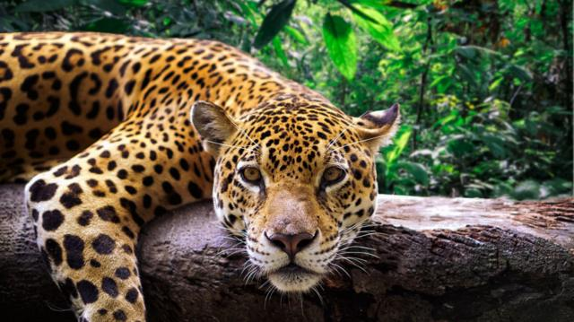
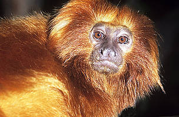
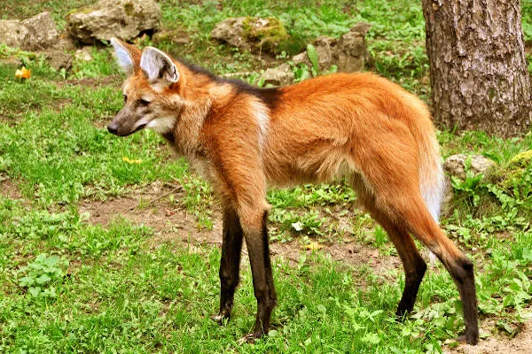
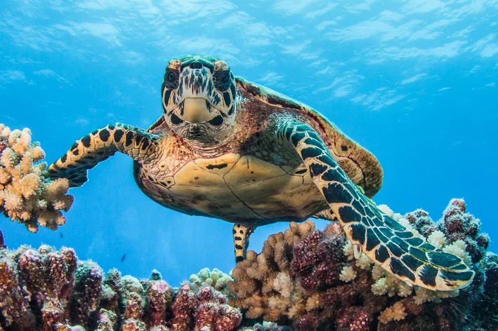
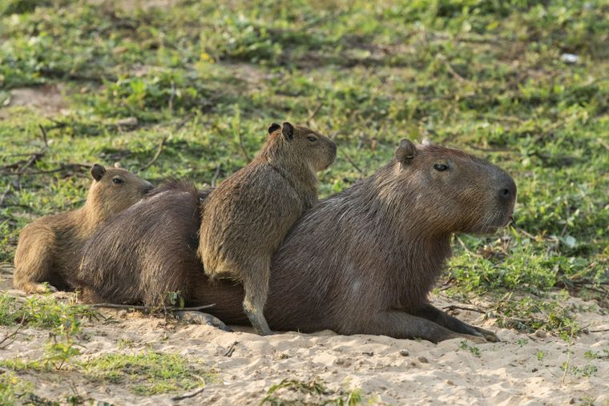

Onça Pintada
Nome científico: Panthera onca
Habitat: Florestas tropicais, savanas e pântanos da América do Sul, América Central e México.
Estado de conservação: Vulnerável
Descrição: A onça é o maior felino das Américas, conhecido por sua força e agilidade. Sua pelagem é amarela com manchas pretas, ajudando na camuflagem em seu ambiente.
Mico-leão-dourado
Nome científico: Leontopithecus rosalia
Habitat: Florestas tropicais do Brasil, especificamente na Mata Atlântica.
Estado de conservação: Em perigo crítico
Descrição: Pequeno primata de pelagem dourada e brilhante, com uma juba ao redor do rosto. É endêmico do Brasil e enfrenta ameaças como perda de habitat e tráfico ilegal.
Lobo-guará
Nome científico: Chrysocyon brachyurus
Habitat: Savanas, cerrados e florestas do Brasil, Argentina, Paraguai, Bolívia e Peru.
Estado de conservação: Vulnerável
Descrição: É o maior canídeo da América do Sul, conhecido por sua pelagem avermelhada e pernas longas. É solitário e se alimenta principalmente de roedores e aves.
Tartaruga marinha
Nome científico: Diversas espécies, como a Chelonia mydas(tartaruga-verde) e a Dermochelys coriacea (tartaruga-de-couro). Habitat: Oceanos ao redor do mundo, com diferentes espécies adaptadas a diferentes ambientes marinhos.
Estado de conservação: Diferentes espécies têm diferentes estados de conservação, mas muitas estão ameaçadas.
Descrição: As tartarugas marinhas são répteis adaptados para a vida no mar, com nadadeiras em vez de patas. Elas enfrentam ameaças como a pesca incidental, poluição e perda de habitat.
Capivara
As capivaras são os maiores roedores do mundo e são nativas da América do Sul. Aqui estão algumas informações principais sobre elas:
Nome científico: Hydrochoerus hydrochaeris
Habitat: Elas são encontradas em uma variedade de habitats aquáticos, como rios, lagos, pântanos e áreas alagadas.
Status de Conservação: Em geral, as capivaras não estão ameaçadas de extinção e são consideradas de "Menor Preocupação" pela União Internacional para a Conservação da Natureza (IUCN).
Descrição: As capivaras têm corpos robustos e cabeças pequenas com orelhas e olhos pequenos. Seu pelo é geralmente marrom ou cinza.